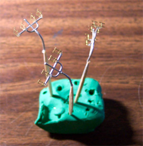
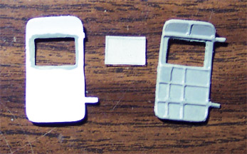
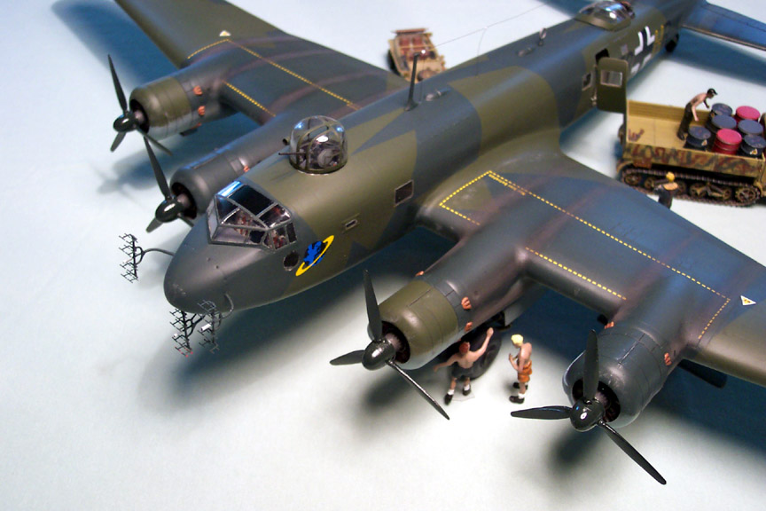

Fw-200 C-8 Construction Page 2
Images, text and model Copyright © 2003 by Matt Swan
The primer coat has had a chance to dry and the few seam areas that needed touching up have been repaired. I shot one more coat of primer and let that dry. One piece of advice for large construction projects; make sure that you have plenty of paint BEFORE you start to paint. I started the final colors with RLM-65 for the underside. I'm using Gunze-Sangyo acrylic paints thinned with Windex. Since this is the first color and I don't have to worry about any demarcation lines yet I have moved my air pressure up to 18 psi. I work my way around the edges then fill the center areas. I've gotten the wings and main fuselage underbelly coated and am working towards the tail surfaces when I realize that I do not have enough paint to finish the job. How could I have been so stupid as to order only one bottle of RLM-65? This paint is not available at my local hobby shop so I dash to the computer and place an additional paint order. Now I get to wait a week for it to arrive and everything gets put back on hold. When I placed my paint order I made sure that not only was I getting enough RLM-65 but also enough Polly Scale RLM-73 and RLM-82 for the top camouflage pattern along with three more bottles of Polly Scale clear flat for my final coat. Not going to run into another one of these shortage problems again!
Right on time my paints arrived and I’m ready to start work again. I finish shooting the underside and let it have a few days for the paint to not only dry but to cure. I have considered many different things while contemplating the upper camouflage pattern; first is that Koster recommends Grun 72 and Grun 73 for the pattern but from looking at these colors in hand they have very little contrast between them and I don’t think that they will create a noticeable pattern when complete. I found many different black and white pictures on the net that indicate very noticeable contrast between the colors. This is what drove me to select RLM-73 and RLM-82 as my camouflage colors. The next thing for consideration was the edge line, not only from green to green but from the underside blue to the upper pattern. It appeared to me that the demarcation from top to bottom was a slightly over-sprayed line while the top pattern had a fairly sharp edge. Also to be considered is how to accent the panel lines. Should I use a preshading technique or work with a sludge wash? The panel lines on the kit are pretty soft which at first lead me to the preshading idea but I don’t have a lot of practice with this technique and really don’t want to experiment on a project of this caliber. I feel that I should be able to get the desired effect with a sludge wash and a hard pad to blend it in – we’ll talk more about this when the time comes.
All right, time to get busy. I’ve loaded my Badger 360 with RLM-82 and set my air pressure at 8 psi. I’m starting at the engine pods and making the demarcation lines along both sides of each pod then moving to the fuselage. I work down both sides of the fuselage and then out to the wings. This is all being done freehand with no masks. Once the entire perimeter has been painted I adjust the air pressure back up to 18 psi and start filling in the central areas. I do have a little over-spray and some of my lines are not as straight as I would like them to be but this will be corrected later on. Once all the primary colors are in place I will go back with some thinned RLM-65 to clean up excess over-spray.
After waiting overnight for the base coat of RLM 82 to dry down and cure partially I can start masking the camouflage pattern. I’m using regular 3M masking tape cut into quarter inch strips to create the basic outline of the pattern and then filling it in with larger strips. This entire process has taken most of my morning but now it’s time to go back to the paint room.
Once again the air pressure is brought down to do the fine demarcation lines where the pattern meets the RLM 65 and then back up to 18 psi for the rest of the job. I am keeping a few inches away from the surface as I don’t want to power paint under the mask should it not be securely pressed down anywhere and trying to maintain about a 90 degree angle of attack.
Once the painting has been completed and the airbrush cleaned I’ll remove the masking. I don’t want the paint to dry completely before the mask is removed to avoid tearing the paint. I’ve used a soft, wide brush to touch-up the demarcation lines with the RLM-65.
A few days have passed now to allow for complete dry and cure of the paint job. Things should start to move pretty quickly now. It’s time to get this bird standing on it’s own feet. Previously I had shown you the primary undercarriage construction and while the paint was drying I worked on the tail wheel assembly which consists of two white metal pieces and a very well detailed resin wheel. I loaded my Dremel with a very fine burr tip and reached into each wheel well and opened up the mounting points. The main gear have three areas that need to be opened in each well; one for the primary gear structure and two for the retraction pistons which get installed later. The tail wheel has only one hole to open and I’ve test fit the gear shaft to ensure that the hole is no larger than absolutely necessary. The main gear slots were cleaned-up a little with the Xacto and I’m ready to install the gear.
I install the main gear by placing the forward strut in place then gently applying pressure until I can slip the back brace into place. The beauty of this is that they are white metal so there is some bend capability here. Once it is in place I use a toothpick to apply some medium consistency superglue to both contact points followed by some accelerator. The second main gear is installed in the same manner and the tail gear is fitted with a goodly amount of super glue. The tail gear door is a Vac piece, which is superglued in place. Now it’s time to install the retraction pistons and I’ve found a minor problem – I did not open the holes up enough for the pistons to fit and angle to their connection points and there is no longer room to be able to get the Dremel in there to enlarge them. This means that I have to chop off approximately 4mm of the shaft to install them. This is not serious, as this area would normally be hidden inside the engine nacelle.
To install these I’m using some very fine tweezers but they are so fine that the piston keeps rolling out of position. To give me a better grip I’ve wrapped a small piece of masking tape around each arm end, which has allowed me to have a much more secure grip on the parts.
And at long last the Condor is standing on it’s own feet. The gear doors will be the next things to be attached and then I’ll move on to the many other detail parts to decorate this bird.
There is obviously a lot on handling to happen to this model still and the weather is warm which means the potential for multiple finger prints is great. I’ve found a cheap solution to this, cotton inspection gloves. These gloves are a one size fits all and can be purchased at virtually any industrial supply store, which can usually be found in any reasonable sized town. They’re sold in bundles of 12 pairs for five or six bucks – that’s a life time supply and not only are they good to protect the model from fingerprints but are great to cover stuff that you may want to flip the model over and set it on like old RTV molds or paint bottles – no scratching involved!
As promised I’m moving on to the gear doors. For each bay I have two unique gear doors and 4 brass hinges that need to be folded to shape. After the doors have been painted and the hinges folded I attached them 3mm inboard of the edges. Next they go back to the paint room to have the hinges sprayed RLM 02, I’ve done it in this order so that any fogging from the superglue is taken care of. The doors look really good and the engineering for the attachment is pretty cool but once I try to install them problems crop up.
Where the rear hinge is supposed to fit inside the bay there is not enough clearance between the bay wall and the main strut, there is not enough clearance to slip it in further down the bay and then slide it into place. I end up having to make a very fine slit into the edge of the exterior wall to slide the hinge through and then slip the forward hinge into place. Both hinges are secured with superglue and accelerator and the rear slot in invisible – thankfully. During this process I snapped one rear hinge off twice and was really starting to lose patience with this thing. In my experience, when you start to get frustrated do something different for a while. Fortunately, with a project of the scale (heh heh) there is plenty of other stuff to do so in the middle on the gear door installation I also prepared the exhaust stacks. It’s one thing to do a set of stacks for a ME-109 or a Spitfire but something else entirely for this baby; there are four sets of three and one set of eight stacks for each engine. These are all nicely cast resin pieces done in sets of four. After each piece was cut off the mold sprue and trimmed up I pressed it onto a prepared piece of masking tape. The tape is simply prepared by rolling a couple of toothpicks into one side of it to give it some structure when airbrushing.
The entire set is sprayed with Polly Scale Rust then washed with a black sludge wash. Each stack opening is touched with Testors flat black and then each stack is wiped with a damp cloth to remove some of the wash and create highlights.
After they have had overnight to dry down each stack is superglued into position. The fit is very tight on a few of them and I have to shave the inside edge of two or three of them to a feathered edge to get it started under the cowling. By using medium superglue I have enough time to get each one positioned correctly before the glue sets up. I can’t help but envision the exhaust patterns that will be created by the stacks and how I will be applying that later on.
Another item that I’ve started working on is the radar assembly. There are three radar trees on the nose of the C-8 and each of these is comprised of four brass pieces and one white metal trunk. Although the brass pieces have a slight curvature in them at the attachment point I don’t feel that it will give them enough strength so I’ve taken my razor saw and created a slight groove in the white metal trunk for each of the interior brass pieces, the exterior pieces will be moved ever so slightly back to give more surface contact area with the end of the trunk. When installed a hole will be drilled into the nose of the fuselage for each trunk to fit into. With this in mind I will be able to drill a small hole at the base of each trunk and superglue a toothpick into it to act as a handle during painting – this is a very handy trick and as you may have noticed, I employ it at every opportunity; it just makes life easier.
Okay, now I’ve gotten all three trunks assembled and mounted on toothpicks. Here they are all set up in a block of modeling clay, another very useful item for the model workshop. Next they were shot with RLM73 to match the nose color. The center core was done in flat white and the lowest array got red warning markings. While they were drying I installed the rear dorsal gun station.

I placed a small drop of superglue onto the rim of the assembly and held it in place with tweezers while a drop of accelerator was placed onto the glue. Next I used a dental pick to insert more superglue around the rim of the assembly to ensure that is was securely in place. Now, back to the front. I carefully measured for the radar placement then drilled very fine pilot holes. I double checked the placement of the pilot holes then enlarged them to fit the radar trunks. I lifted the rear of the plane to a level point and placed a block under it to maintain this level while the radar trunks were glued in place. This is another superglue/accelerator process and only took a few moments.
I touched up the paint on the trunks real quick as the superglue wanted to fog a little here. Moving onto the spine of the craft I installed the directional antennae and the mast for the radio antennae. For the antennae itself I’m using invisible thread drawn across a permanent black marker then superglued into place. The mast and mounts have been painted, the antennae installed and drops of superglue placed on the thread to form insulators which are painted white. It’s getting very close now. The cargo door will be installed after the final finish has been completed and so too will the top turret glazings.
Everything needs to just sit and cure for a few days now. The next thing to happen is a coating of Future floor wax but if this is done too soon the gasses from the paint will cause a snake skin effect, which I would rather not deal with. Once that is done it needs two more days for the Future to cure and then the decals can be placed. While this time is passing I will work on the cargo door and the second Henschel missile.

The cargo door consists of three vacuform pieces; an interior panel, an exterior panel and a clear window that gets sandwiched in-between them. During the cleaning up process I managed to break off and lose one of the hinge pieces from the exterior panel so that will have to be rebuilt after the pieces have been assembled. The interior panel was done with RLM 02 and the inside edges of the window opening on both panels were trimmed with RLM 02 also. The clear panel was masked on the outside edge then installed into the exterior panel with Testors Clear Parts cement. After that dried the main panels were glued together and the hinge was rebuilt with a little white putty. I brush painted the remaining interior edges then airbrushed the exterior with RLM 73. All this happened while the first coat of Future was curing on the model.
The top turret glazings still needed to be masked and painted. The masking was simply done with short, thin strips of masking tape but it took several hours to get all these pesky little panels masked off. The rear glazing has been cut into two sections so that it can be displayed open with the machine gun installed. First they gat a coat of RLM 66 black gray for the interior coloring and then two coats of RLM 73. The 20mm cannon glazing was stuffed with tissue paper to prevent any paint from entering through the gun slot and getting on the interior areas. After the paint had a chance to dry I coated the pieces with Polly Scale clear flat then removed the masks.
The Future has had two days to cure now and it’s time to start placing some decals. Although this is not the first Koster product that I’ve worked with it is the first time that I have used decals from him. I was pleasantly surprised to find them to be very nice. The carrier film is very fine, on par with the ALPS decals that Mike Grant does but these are silk-screened. The registry is right on the money and color density is very good. The decals required some care when sliding off the paper due to the thin carrier but they reacted very well to both Micro-Set and Micro-Sol. The only complaint that I have is the lack of stencils. There are the national markings, walk area boarder markings, squadron markings and two fuel markings. Would have been nice to have the stencils for the control surfaces and, based on other German aircraft, there probably were many other service stencils on the original aircraft. Oh well, guess you can’t have everything – going to look through the spare decal pile and see if I can find some stuff to flush out the details.
After the decals dried overnight I laid another coat of Future on them to seal them down then started working with some sludge wash once that had dried. Most of the panel lines are so soft that they would not take the wash for crap so I ended up focusing on the engines and the access panels there. I put several coats of Tamiya X-19 smoke on from the exhaust shroud on back. These aircraft burned very low-grade fuel which left sever exhaust stains all the way to the rear elevator. I gave this treatment a couple hours to dry then shot the entire plane with Polly Scale clear flat; only took one bottle to do the job so there is plenty left for the next project. Now the masks can come off – finally. The masks have been on the main fuselage for nearly four months now and on the cockpit canopy and gondola for about three months. The first mask to come off was from the fuselage and nearly all the glue from the tape stayed on the glass! I pulled one from the canopy and it came off clean. I had forgotten to Future the clear parts for the Fuselage windows and every single one held the glue while all the parts that had been Futured came clean easily. A little Goo-Gone on a Q-tip cleaned up the windows quite nicely. For those few areas where paint had worked under a mask I sliced the end of a toothpick to form a wedge, dipped it in Goo-Gone and gently buffed the paint off the plastic – worked great and the view into the cockpit is excellent.
Now I’m going back to the exhaust stains and doing a little more work on them. I’m using a pop bottle top and shaving colored chalks into it. I use some Sienna Brown, Charcoal Black and Smoke Gray. Using a #1 soft round brush I pick up a quantity of ground chalk and begin to work it into the wing overtop the Smoke stains that I had sprayed on earlier. It’s useful to hold the model so that the area that is being worked on is level and the chalk will stay put while it’s worked into the surface. This is easy stuff to do and if you screw up a damp fingertip removes it and you’re good to go at it again. Once this has been completed I glue the top glazings in place with Testors Clear Parts Cement. Notice in the picture at the right how the fuel distribution lines are visible through the window. This can be seen similarily in historical photographs.
The cargo door is done also. After removing the mask from the window I hold it in the closed position and mark where the ends of the door hinges rest. At this mark I drill a small hole for each hinge to mount and add a small drop of super-glue. All that is left to do is to add the fuel dump to the gondola and add the Henschel missiles. Still need to get the second missile done.

I used a short piece of fuse wire to make a fuel dump and superglued it to the rear of the gondola. The Henschel missiles were attached with medium superglue.

The halftrack that you see is a Bandai kit, the figures are from different Verlinden packages along with an American Armorer that has slipped into the German ground crew as a spy. Also, to give an idea of just how large this bird really is, there is an IAR80C, which is about the same size as a 109.
Another Bandai kit is visible here, the Schwimmwagen on the right side of the aircraft. Normally, when being serviced, the persiplex dome on the rear gun position was covered with a tarp to prevent the interior of the aircraft from becoming too hot.
This has been a really great kit to build. Even with four months invested in it, should you ever consider purchasing a Koster Aeroenterprises kit, do it. You will not regret it. Bill Koster is an excellent designer and engineer. The kit built up well with very few problems; I’ve had more trouble from an Academy kit than from this baby. When there were problems, like the damage that I caused, Bill was most helpful in getting it taken care of. The kit includes parts for several different conversions. The overall quality of the parts was very good. The only thing that I would have asked for improvement on was the directions, there could have been more comprehensive and included better color coding.
From here I need to start working on the diorama material. I've already acquired a large poster frame and will get some glass cut to replace the sheet plastic that came with it. This is all for another article - this one is done. I hope you enjoyed the build.
Back to Page 1